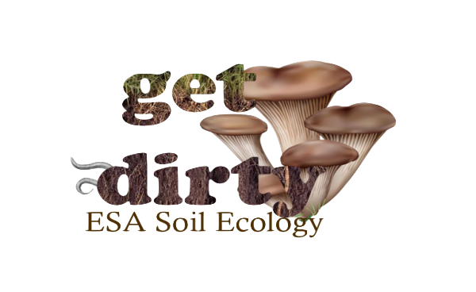
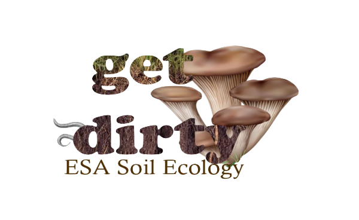
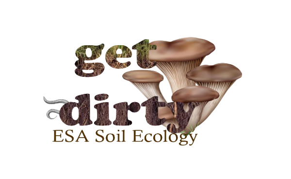

Special thanks to our sponsors
 
To foster interactions among soil ecologists, we organized a two day live teleconference event to present and discuss talks in soil ecology. We thank ESA 2020 for providing the platform for the full talks. Please consider becoming an ESA member here: https://www.esa.org/membership/
Tuesday, August 4th
INS 20 - Harnessing the Soil Ecological Data Revolution: Challenges, Opportunities, and a United Way Forward (60 min)
OOS 21 - Ecological Responses to Drought Across Scales (60 min)
OOS 7 - Linking Climate, Microbial Adaptation, and Ecosystem Processes (60min)
Day one will focus on key frontiers in understanding the response of belowground systems to climate change. One of the best ways of predicting future ecosystem responses to global change is to understand the mechanisms driving current soil community assembly and functions across disparate environments. In INS20, we will set the stage by gathering ten soil ecologists from disparate disciplines and scientific approaches from ecosystem modelers, to soil biogeochemists, and soil biogeographers to create a unified approach to understanding soil ecosystems at the global scale. With climate change, rainfall patterns are expected to change in the future, with tremendous consequences for humans and ecosystems. In OOS21, we feature work quantifying microbial, plant, and ecosystem response to drought, with particular focus on grasslands and croplands and studies that aim to scale or generalize ecosystem responses to drought. The response of ecosystem processes to climate change will vary depending on both microbial community and evolutionary dynamics, but the interactions between these forces are under-studied. In OOS7 we feature investigations in rapid evolution, community assembly, trait-based models, and eco-evolutionary dynamics to link climate, microbial community, and ecosystem processes. Together, these sessions will provide key insights needed to understand and model how below-ground ecosystems are responding to climate change.
12:00- 12:05 pm: Introduction of both day's agenda - Elsa Abs (eabs@uci.edu)
12:05- 1:05 pm: Star vision speech: Dr. Bala Chaudhary (bala.chaudhary@depaul.edu) https://vimeo.com/user121798914/review/461592321/fe7f6c6646
1:05- 1:15 pm: Introduction of the Tuesday sessions
1:15- 2.15 pm: INS 201:15- 1:20 pm: Colleen Iversen (iversencm@ornl.gov)(15min break)
1:20- 1:25 pm: Amy Zanne (aezanne@gmail.com)
1:25- 1:30 pm: Stephanie Kivlin (skivlin@utk.edu)
1:30- 1:35 pm: Erin Cameron
1:35- 1:40 pm: Colin Averill
1:40- 1:45 pm: Ben Bond-Lamberty
1:45- 1:50 pm: Samantha Weintraub
1:50- 1:55 pm: Benjamin Sulman
1:55- 2:15 pm: Discussion
2:30- 3:30 pm: OOS 212:30- 2:45 pm: Introduction and summary of talksPanel speakers: Jennifer Jones (jones514@msu.edu), Lydia H. Zeglin, Steven D. Allison (allisons@uci.edu), Cristina Portales-Reyes, Melinda D. Smith, Sarah Evans (evanssa6@msu.edu)
2:45- 3:30 pm: Speaker Q&A, Discussion of ecological responses to drought
Session Chair: Sarah Evans (evanssa6@msu.edu)
Note taker: Adriana L. Romero-Olivares
Chatbox moderator: Moira Hough
(15min break)
3:45- 4:45 pm: OOS 73:45- 3:50 pm: Session chair's introduction of the sessionPanel speakers: Ed Hall (Ed.Hall@colostate.edu), Amy Zanne (aezanne@gmail.com), Alexander Chase (abchase@ucsd.edu), Alejandra Rodriguez-Verdugo (alejanr1@uci.edu), Elsa Abs (eabs@uci.edu), Adriana Romero-Olivares (Adriana.RomeroOlivares@unh.edu)
3:50- 4:00 pm: 1min summary of speakers' talks
4:00- 4:45 pm: Q&A with the panel of speakers
Session Chair: Moira Hough (houghm@email.arizona.edu)
Note taker: Moira Hough
Chatbox mediator: Jennifer Jones
5:00 pm: Biogeosciences + Soil Ecology + Agroecology mixer
Wednesday, August 5th
OOS 62 - The Next Belowground Frontiers for Trait-Based Ecology: Moving Beyond Root-Trait Measurements
OOS 73 - Root Dynamics in a Changing World: Deep and Dark Effects on Ecosystem Function
OOS 53 - Bridging the Gap Between Fine-Root and Fungal Functional Traits
We are experiencing a belowground data revolution: Like mushrooms, data on fine-root and fungal traits are sprouting up everywhere. It is time to tackle some of the biggest questions and shape the future directions in belowground ecology. OOS 62 will lead the way by featuring presentations on the most recent accomplishment of root trait studies. In particular, speakers will approach the genetic mechanisms of root trait variation, the role of root traits in ecosystem processes or the interaction between root traits and soil microorganisms. In turn, OOS 73 sheds light on the deep and dark effects of root dynamics on ecosystem functions. Researchers in this session focus on the understudied tropical biome to understand the role of roots in forest resilience, drought resistance or reforestation. Lastly, OOS 53 proposes a path forward: Bridging the gap between fine-root and fungal functional traits. Speakers in this session take up a challenge by linking fine root traits to mycorrhizal fungal traits, to mycorrhizal networks and beyond. Together, we will pave the way for next generation research on belowground trait-based ecology.
Morning: from 9:30 to 11:30 am
9:30- 9:35 am: Introduction by one of the session organizer/co-organizer
9:35- 9:40 am: Breakout - icebreaker (have a pen and paper ready)
9:40- 10:15 am: OOS 629:40- 9:45 am: Luke McCormack (mltmcc@gmail.com)
9:45- 9:50 am: Larry M. York
9:50- 9:55 am: Deliang Kong
9:55- 10:00 am: Albina Khasanova
10:05- 10:10 am: Peng Wang
10:10- 10:15 am: Mingzhen Lu
10:15- 10:20 am: Burning questions - live + chat
10:20- 10:50 am: OOS 7310:20- 10:25 am: Oscar J. Valverde-Barrantes
10:25- 10:30 am: Daniela Yaffar
10:30- 10:35 am: Kelly M. Andersen
10:35- 10:40 am: Magda Garbowski
10:40- 10:45 am: Marie Arnaud
10:45- 10:50 am: Chris M. Smith-Martin (c.m.smith@columbia.edu)
10:50- 10:55 am: Burning question - live + chat
10:55- 11:30 am: Breakout - discussion
Afternoon: from 1:00 to 2:30 pm
1:00- 1:05 pm: Breakout- icebreaker (have a pen and paper ready)
1:05- 1:30 pm: OOS 531:05- 1:10 pm: Monique Weemstra
1:10- 1:15 pm: Bala Chaudhary
1:15- 1:20 pm: Christopher W. Fernandez
1:20- 1:25 pm: Brian J. Pickles
1:25- 1:30 pm: Colleen M. Iversen (iversencm@ornl.gov)
1:30- 2:00 pm: Breakouts/discussion
We solicit essays not to exceed 300 words for your vision of the future of belowground ecology. The author of the winning essay will receive a cash prize and be invited to contribute to a publication in New Phytologist. To enter you must be an early career researcher (graduate students included or within 8 years of receiving your PhD). Please email your essay with the subject line My Vision for Belowground Ecology to ecologyunderground2020@gmail.com by August 7th to be eligible..
Questions? Contact the organizers at ecologyunderground2020@gmail.com